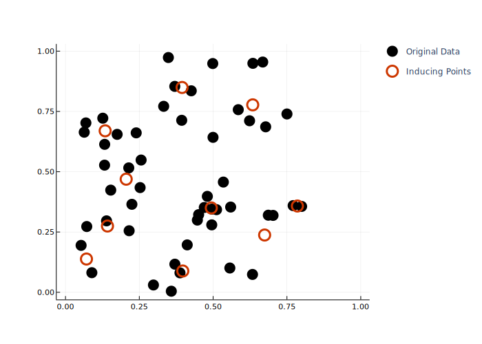
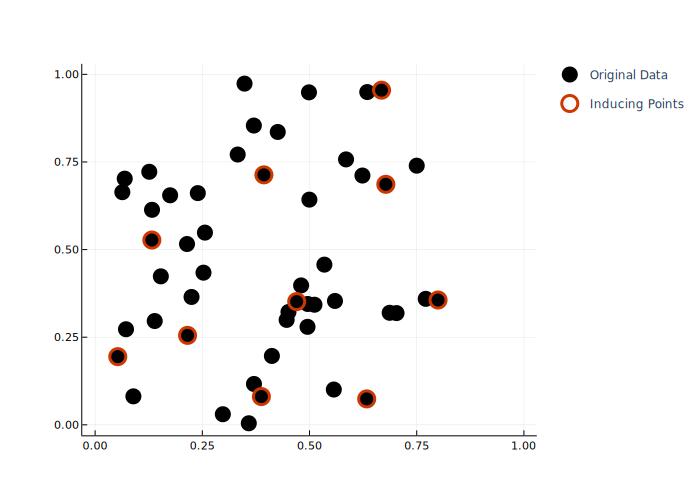
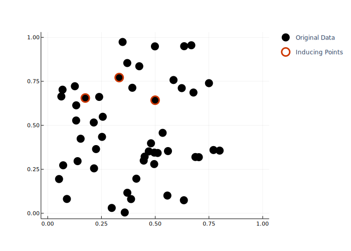
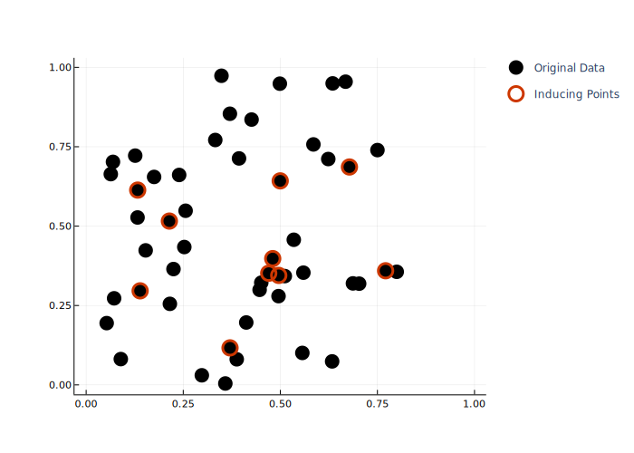
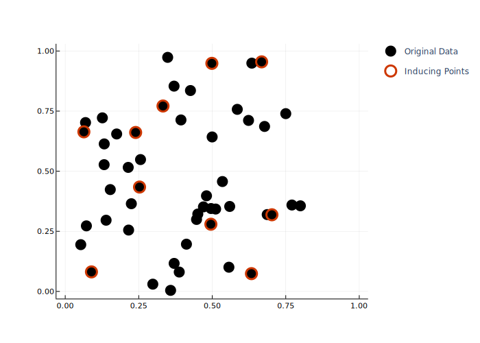
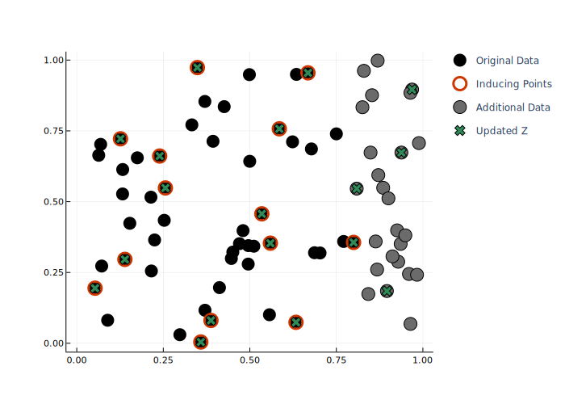
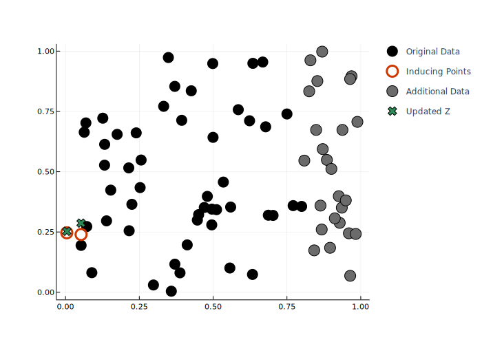
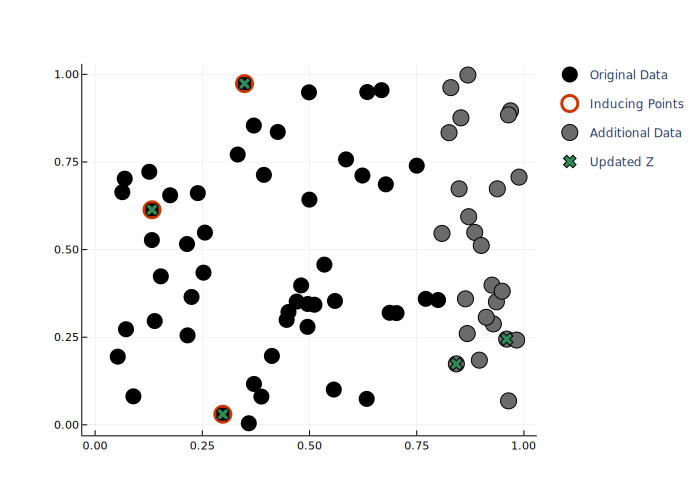
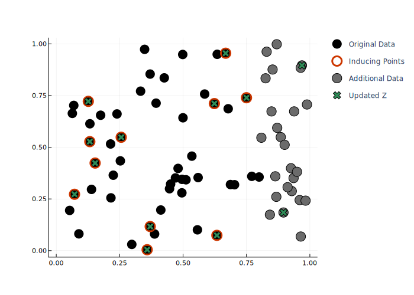
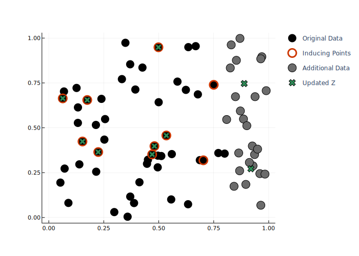

Available Algorithms
The algorithms available through InducingPoints.jl can be split into offline and online use. While all algorithms can be used to create one-off sets of inducing points, the online algorithms are designed in a way that allows for cheap updating.
We start with a set of N data points of dimension D, which we would like to reduce to only M < N points.
D = 2
N = 50
M = 10
x = [rand(D) .* [0.8, 1.0] for _ in 1:N]Offline Algorithms
KmeansAlg
Uses the k-means algorithm to select centroids minimizing the square distance with the dataset. The seeding is done via k-means++. Note that the inducing points are not going to be a subset of the data.
alg = KmeansAlg(M)
Z = inducingpoints(alg, x)
kDPP
Sample from a k-Determinantal Point Process to select k points. Z will be a subset of X. Requires a kernel from KernelFunctions.jl
kernel = SqExponentialKernel()
alg = kDPP(M, kernel)
Z = inducingpoints(alg, x)
StdDPP
Samples from a standard Determinantal Point Process. The number of inducing points is not fixed here. Z will be a subset of X. Requires a kernel from KernelFunctions.jl
kernel = SqExponentialKernel()
alg = StdDPP(kernel)
Z = inducingpoints(alg, x)
RandomSubset
Sample randomly k points from the data set uniformly.
alg = RandomSubset(M)
Z = inducingpoints(alg, x)
Greedy
This algorithm will select a subset of X which maximizes the ELBO (Evidence Lower BOund), which is done in a stochastic way via minibatches of size s. This also requires passing the output data, the kernel and the noise level as additional arguments to inducingpoints.
y = rand(N)
s = 5
kernel = SqExponentialKernel()
noise = 0.1
alg = Greedy(M, s)
Z = inducingpoints(alg, x; y = y, kernel = kernel, noise = noise)
Online Algorithms
These algorithms are useful if we assume that we will have another set of data points that we would like to incorporate into an existing inducing point set.
N₂ = 25
x₂ = [rand(D) .* [0.2, 1.0] + [0.8, 0.0] for _ in 1:N₂]We can then update the inital set of inducing points Z via updateZ (or inplace via updateZ!).
OnlineIPSelection
A method based on distance between inducing points and data. This algorithm has several parameters to tune the result. It also requires the kernel to be passed as a keyword argument to inducingpoints and updateZ.
kernel = SqExponentialKernel() ∘ ScaleTransform(4.0)
alg = OIPS()
Z = inducingpoints(alg, x; kernel = kernel)
Z₂ = updateZ(Z, alg, x₂; kernel = kernel)
UniGrid
A regularly-spaced grid whose edges are adapted given the data.
alg = UniGrid(5)
Z = inducingpoints(alg, x)
Z₂ = updateZ(Z, alg, x₂)
SeqDPP
Sequential Determinantal Point Processes, subsets are regularly sampled from the new data batches conditioned on the existing inducing points.
kernel = SqExponentialKernel()
alg = SeqDPP()
Z = inducingpoints(alg, x; kernel = kernel)
Z₂ = updateZ(Z, alg, x₂; kernel = kernel)
StreamKmeans
An online version of k-means.
alg = StreamKmeans(M)
Z = inducingpoints(alg, x)
Z₂ = updateZ(Z, alg, x₂)
Webscale
Another online version of k-means
alg = Webscale(M)
Z = inducingpoints(alg, x)
Z₂ = updateZ(Z, alg, x₂)